Especies en el Río Caño Negro
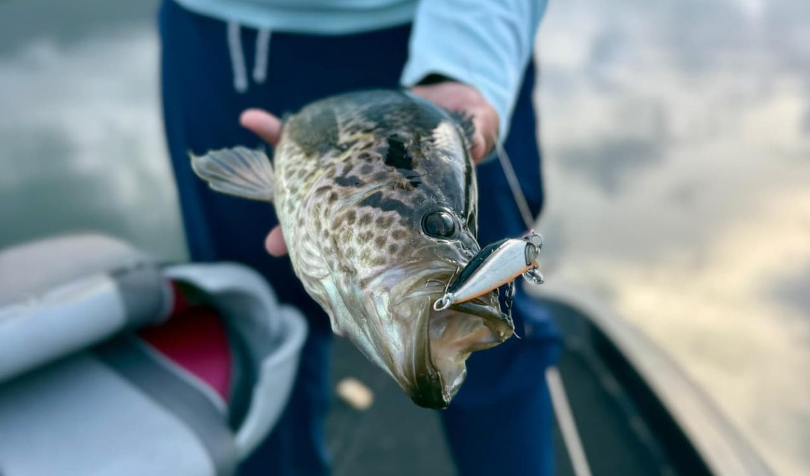
Guapote
Máximo 5 piezas por persona.
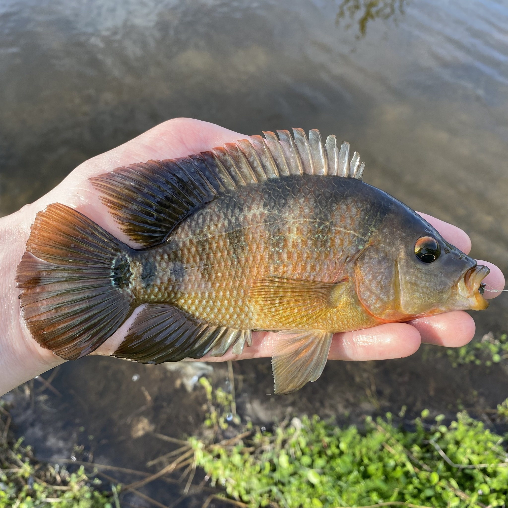
Mojarra
Máximo 5 piezas por persona.

Tilapia
Especie invasoraNo tiene límite de captura.
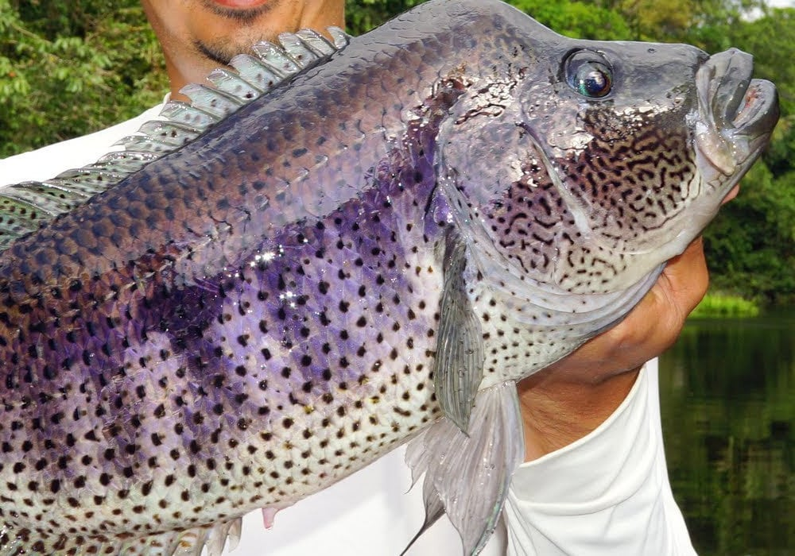
Guapote Lagunero
Máximo 5 piezas por persona.
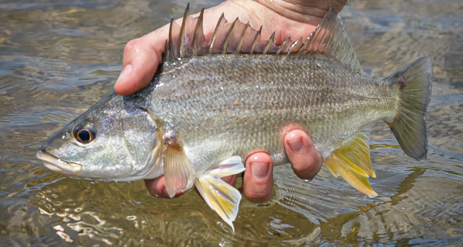
Roncador
Especie invasoraMáximo 5 piezas por persona.
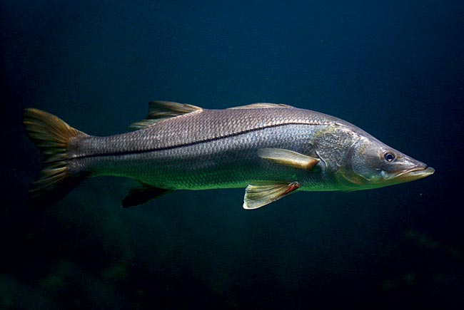
Robalo
Máximo 5 piezas por persona.
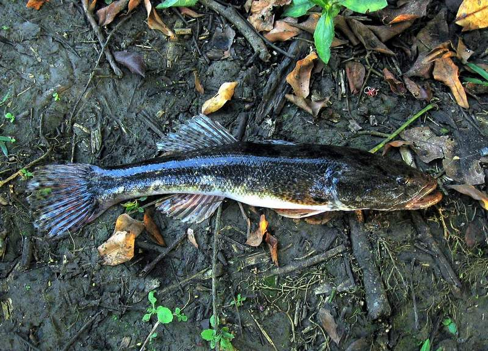
Guabina
Máximo 5 piezas por persona.
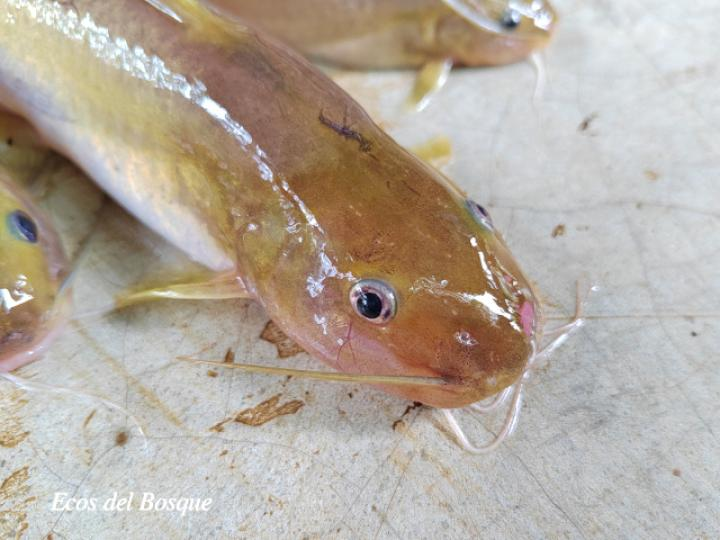
Barbudo
Pesca Libre

Gaspar
1 pieza por familia
Tamaño mínimo 1.20 m

Sábalo
Permitido únicamente para pesca deportiva.
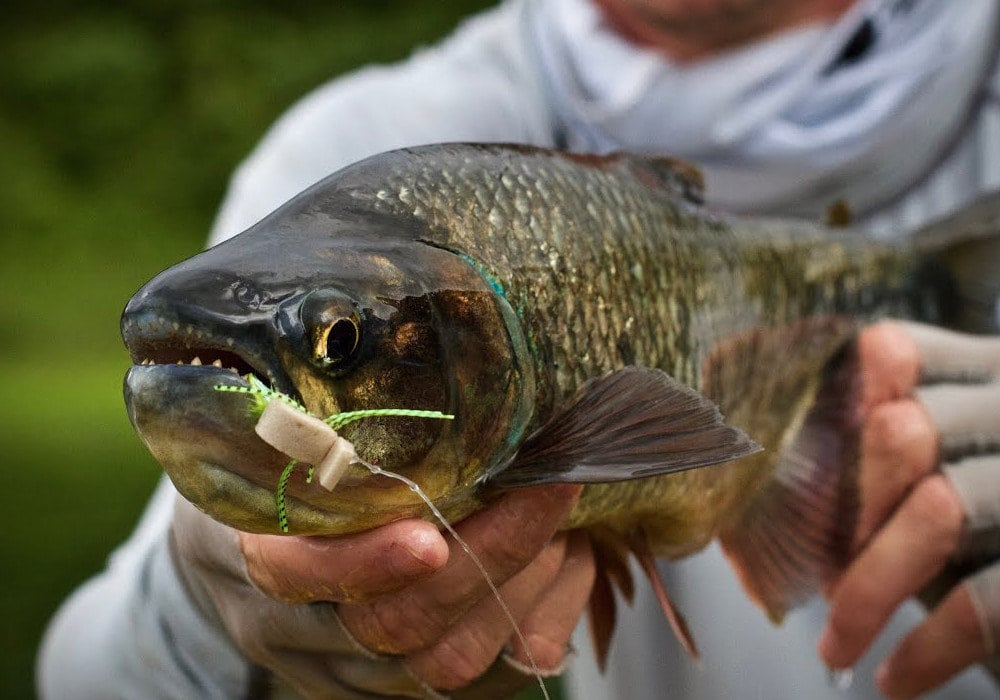
Sabalete o Machaca
Máximo 5 piezas por persona.
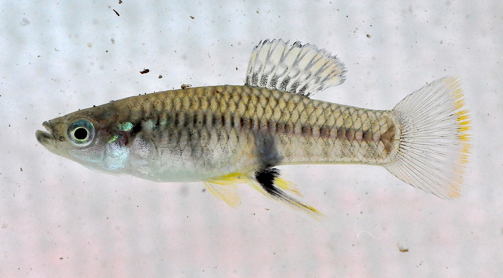
Bobito
Normalmente se usa como carnada.
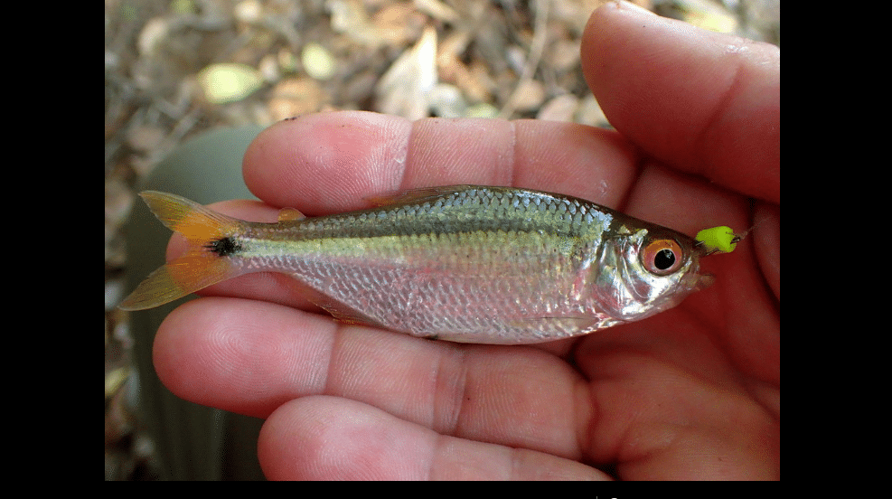
Sardina
Normalmente se usa como carnada.
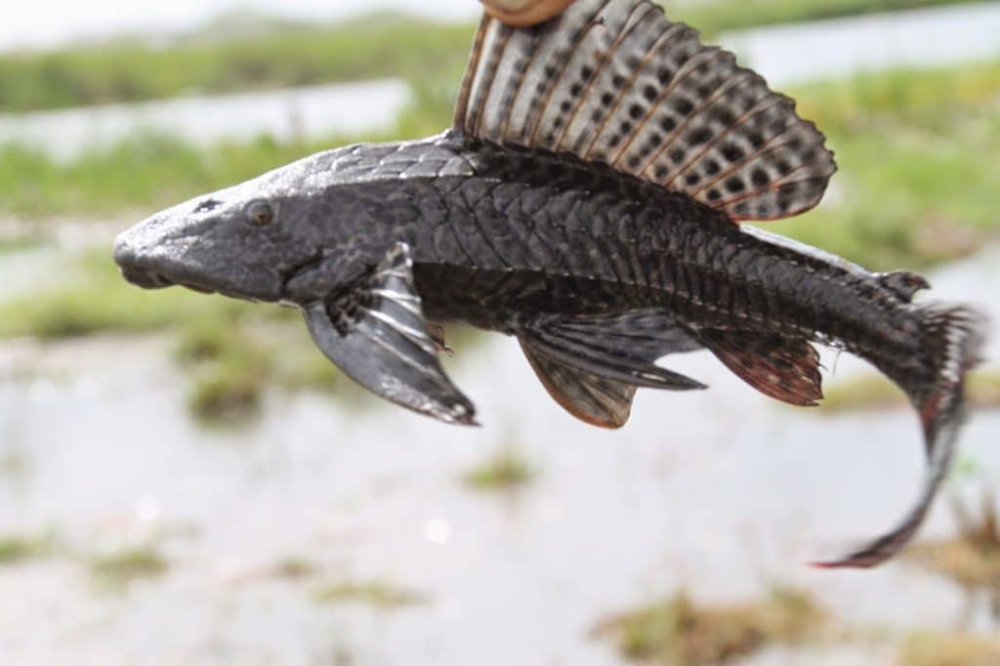
Pez Diablo
Tóxico
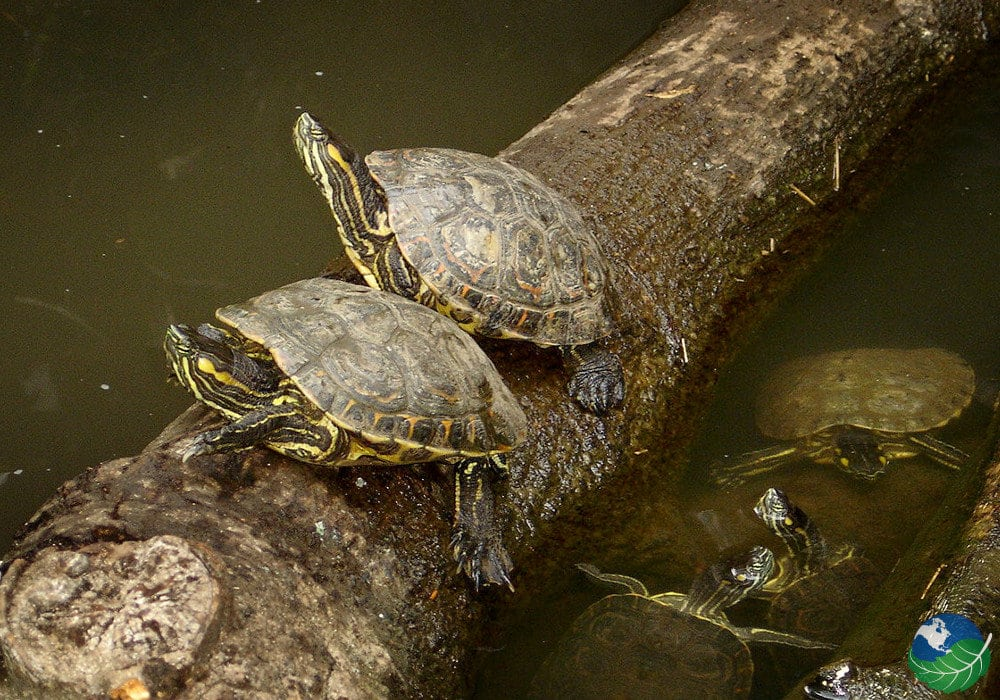
Tortuga
Prohibido el consumo
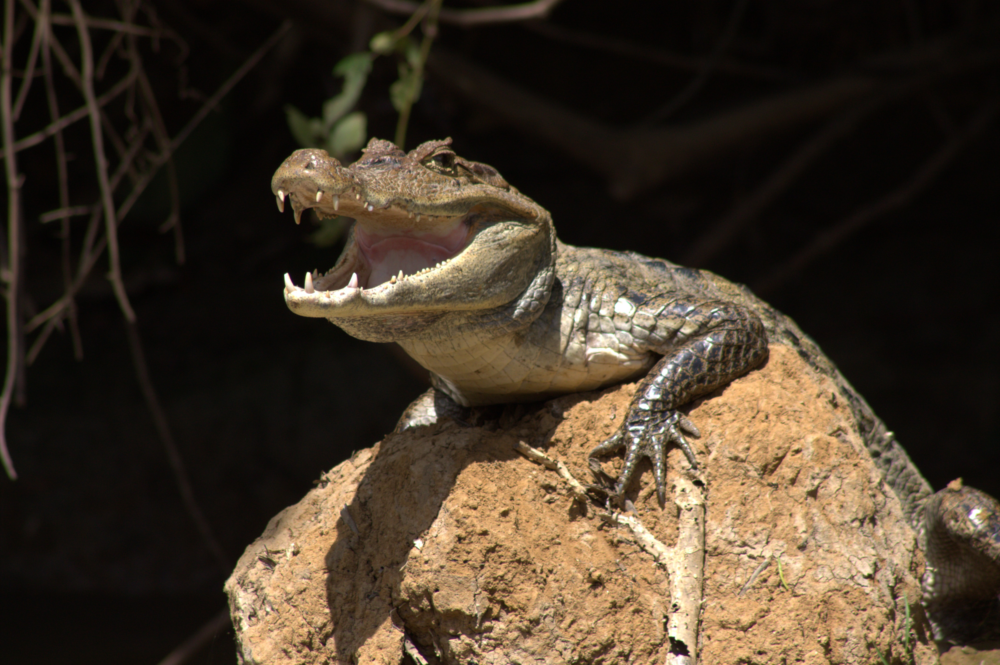
Caimán
Prohibido el consumo
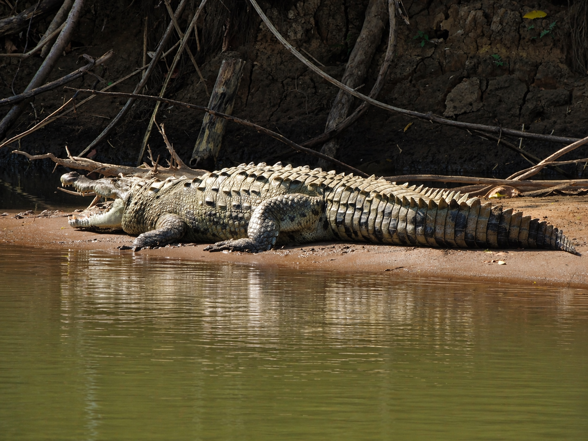